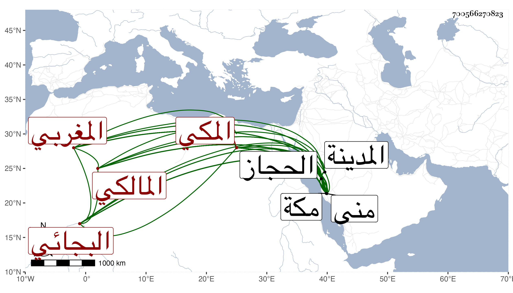

0902Sakhawi.DawLamic.ITO20230111-ara1.EIS1600.700566270823
Biography ID: 700566270823
130
محمد بن عبد القوي بن محمد بن عبد القوي بن أحمد بن محمد بن علي بن معمر بن سليمان بن عبد العزيز بن أيوب بن علي الجمال أو القطب أبو الخير بن الشيخ أبي محمد البجائي المغربي الأصل المكي المالكي أخو أحمد الماضي وأبوهما ويعرف بابن عبد القوى وهو بكنيته وبقطب الدين أشهر . ولد في ليلة الأحد ثالث عشر شوال سنة إحدى وثمانين وسبعمائة ولكن سيأتي في نظمه أنه في التي بعدها بمكة ونشأ بها فحفظ القرآن والعمدة والرسالة وألفية ابن ملك ، وعرض على الجمال بن ظهيرة وتفقه بأبيه والشريف عبد الرحمن بن أبي الخير الفاسي وسمع عليه صحيح ابن حبان والقاضي على النويري وكذا بالبساطي أيام مجاورته وبلغني أنه أذن له في الفتيا وسمع من ابن صديق صحيح البخاري وكذا مسند عبد في سنة اثنتين وثمانمائة بقراءة أبي الفتح المراغي وسمع أيضا من ابن سلامة والولي العراقي وابن الجزري وآخرين منهم فيما ذكر القاضي أبو الفضل النويري بل كان يقول إنه حضر مجلس ابن عرفة حين ورد عليهم حاجا سنة تسعين وابن خلدون وغيرهما وإنه زار المدينة وقبر النبي صلى الله عليه وسلم وسمع على الزين المراغي كثيرا وكذا سمع على الشهاب بن الناصح وأنه أخذ النحو عن خليل بن هرون الجزائري والشمس الوانوغي وأبي القسم العقباني وإنه سمع من القاموس على مؤلفه المجد واستفاد منه كثيرا من اللغة وأجاز له جماعة منهم الشهاب أحمد بن أقبرص وأحمد بن علي بن يحيى بن تميم الحسيني وأبو بكر بن عبد الله بن أبي بكر بن عبد الهادي وعبد الله بن خليل الحرستاني ومحمد بن محمد بن محمد بن قوام ومحمد ابن محمد بن محمد بن منيع وفاطمة ابنة ابن المنجا وفاطمة وعائشة ابنتا ابن عبد الهادي والعراقي والهيثمي والفرسيسي وسليمان السقاء وعبد القادر الحجار . وتعانى الشعر فتميز فيه وأكثر من مطالعة التاريخ بحيث صار يحفظ منه كثيرا لا سيما تواريخ الحجاز وما يتعلق بعربها ومحالها ، وتميز في الأنساب الجاهلية وغيرها وناب عن الكمال بن الزين وأبي عبد الله النويري في العقود ، وكان ذا نظم جيد وحافظة قوية في التاريخ وذكاء يتسلط به على الخوض في كثير من الفنون بحيث يقضي له بالتقدم فيها مع قلة مطالعته إلا فيما أشير إليه بل لا يكاد يراه أحد ناظرا في كتاب باقعة في الهجاء ممن يخشى لسانه ويتقي وقد كذبه البقاعي لبعض الأغراض . وذكره المقريزي في عقوده وقال إنه برع في الأدب وقال الشعر الجيد وشارك في عدة فنون وقدم علي بمكة لما حججت في سنة خمس وعشرين ولازمني مدة مجاورتي بها في سنة أربع وثلاثين فبلوت منه فضلا وفضائل واستفدت منه أخبارا ونعم الرجل هو ، وذكر غيره في محفوظه ابن الحاجب وقال إنه قرأ على شيوخ عصره وبرع في فنون من العلم وغلب عليه الأدب وقال الشعر الفائق الرائق ومدح أعيان مكة وأمراءها وكان حلو المحاضرة راوية للأخبار كثير الاطلاع يذاكر بكثير من التواريخ وأيام الناس سيما أحوال مكة وأعيانها فكان أعجوبة فيها مع معرفته بأراضي الحجاز وخططه هجاء بذئ اللسان قل من يسلم من أهل مكة من هجوه وهو فيه أطبع وكثر بين المكيين تناشدهم له . قلت : بل كتب الناس عنه من نظمه الكثير وجمع النجم بن فهد منه مجلدا ، أجاز لي وبلغني أنه كان يكاتب التقي بن قاضي شهبة بأخبار الحجاز بعد التقي الفاسي ، وكان ابن قاضي شهبة يشكر حفظه ويقول إنه لما حج في سنة سبع وثلاثين جاءه بمنى بعد انقطاع الحج ليلة الرحيل ولامه في عدم إرساله إليه أول قدومه وقال له كنت أحج معك وأريك كل مكان بمكة وكل مزار ومن وقف به وما قيل فيه ومقابر كثيرة لا يعرفها الناس ومواضع يجهلونها إلى غير ذلك مما يدل على فضل كبير واطلاع كثير ومات بمكة بعد أن كف سنين وتمرض بإسهال مفرط في ليلة الأحد منتصف ذي الحجة سنة اثنتين وخمسين وصلى عليه بعد الصبح عند باب الكعبة ودفن عند أبيه في المعلاة سامحه الله وإيانا . ورثاه البدر بن العليف بما كتبت بعضه مع كثير من نظمه في ترجمته من معجمي . ومن نظمه :
| ومايس شبهت عساله | في روضة الحسن كغصن وريق |
| رشفت من ملمضه قهوة | قد مزجت منه بمسك وريق |
وقوله :
| فيا نفس عن كم زفرة تتنفسي | ومن طيبة الجرعاء كم تتجرعي |
| أراك إذا ما الورق بالجزع غردت | بتذكارها عهد المحبة تجزعي |
| وان ناح مصدوع الفؤاد من الهوى | ظللت له مما شكا تتصدعى |
| ويشجيك إن غنى أخو الشوق منشدا | حمامة جرعا حومة الجندل اسمعي |
| وإن حن إلف أو تألق بارق | بكيت على سكان تجد بأدمع |
وقوله :
| صب تناءت داره | لما جفته نواره |
| كالربع يبعد أهله | إن لم ترش أشجاره |
| ولقد يكون ممتعا | ومصونة أسراره |
| أيام تقمن عقله | بالمنحنى أقماره |
في أبيات . وأورد له المقريزي مما بعث به إليه من مكة افتتاح رسالة :
| يا أحمد بن علي دمت في نعم | مدى الزمان مصونا من تقلبه |
| هذا الذي كنت أرجو أن أفوز به | من فيض فضلك قد جاء البشير به |
وقوله :
| يا غافلا عن نفسه | أخذتك ألسنة الورى |
| السهل أهون مسلكا | فدع الطريق الأوعرا |
| واعلم بأنك ما تقل | في الناس قالوا أكثرا |
وقوله :
| أجزت لهم ما قد رويت بشرطه | وما لي من نظم بديع ومن نثر |
| بثانية بعد الثمانين مولدي | بمكة من شواله ثالثه العشر |
